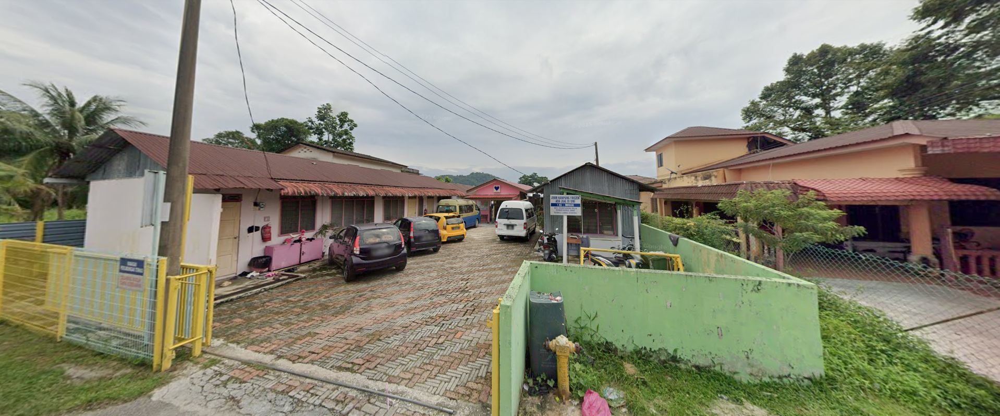
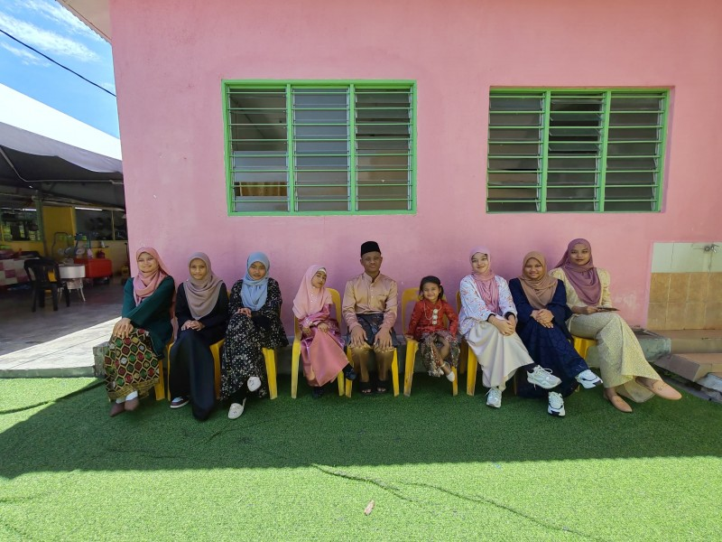

Rumah Nurul Iman


Rumah Nurul Iman was established in late 2000, originally named Yayasan Nurul Iman. This initiative was spearheaded by Mr. Khairul Anuar Bin Mohmad Razi, who aimed to create a sanctuary for children in need, especially orphans, those from impoverished backgrounds, abandoned children, or victims of abuse. His goal was to offer not just shelter but also access to quality education and moral support to assist them in building a brighter future.
In its initial stage, Rumah Nurul Iman was managed by a committee. The committee collectively chose Mr. Khairul Anuar as the Manager and Warden, giving him responsibility for the daily operations and management of the home. However, financial matters and property management were overseen by other appointed individuals.
In 2004, the center was moved to a new location at Jalan Intan, Kampung Dato Ahmad Said, due to various logistical and administrative issues. This relocation was intended to offer a more appropriate setting and improved facilities for the children.
Towards the close of 2005, a further relocation occurred. The children were moved to a rented house at Plot 359, Lorong Dato, Manjoi, Ipoh, Perak. The living arrangement comprised a modest two-unit house rented for RM200.00 each month. Even with financial challenges and relying entirely on his personal income, Mr. Khairul Anuar was determined and dedicated to the ongoing operations of the home. His efforts received substantial backing from the local community and the State Assemblyman for Manjoi at that time, YB Dato’ Haji Nazri, whose contributions were vital in supporting the care center.
In June 2010, as part of a campaign to broaden support for underprivileged children, Mr. Khairul Anuar launched a branch care center in Kampung Pinang, Kamunting, Taiping. This center was specifically for male children. However, it had to shut down on 1st September 2016 due to a lack of ongoing support and funding.
On 30th June 2011, to meet governmental and legal obligations, Pertubuhan Kebajikan Kasih Nurul Iman Negeri Perak was officially registered with the Registrar of Societies Malaysia. This formal registration allowed the organization to operate more effectively and align with the standards set by the Department of Social Welfare (JKM).
In 2021, during an official Annual General Meeting (AGM), a notable leadership change occurred. Mr. Khairul Anuar made the sincere choice to transfer the complete responsibility of managing and operating the organization to a former resident of Rumah Nurul Iman. This person, who had previously received care and guidance from the home, was given the leadership role for both the Pertubuhan Kebajikan Kasih Nurul Iman and the Nurul Iman Orphanage and Welfare Center. This transition represented a new chapter, signifying the success of the home in fostering responsible and capable individuals who are now contributing by continuing its mission. The goal remains unchanged—to ensure the sustainability, growth, and continuous support for orphans and underprivileged children in need.